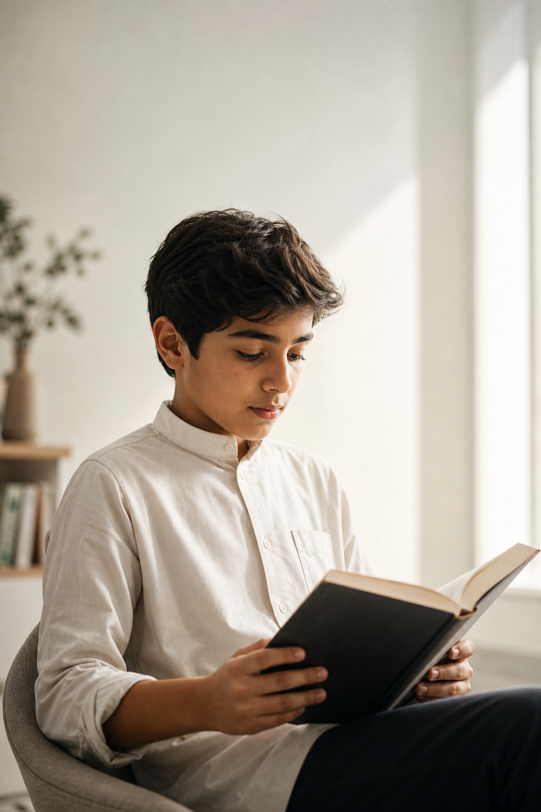
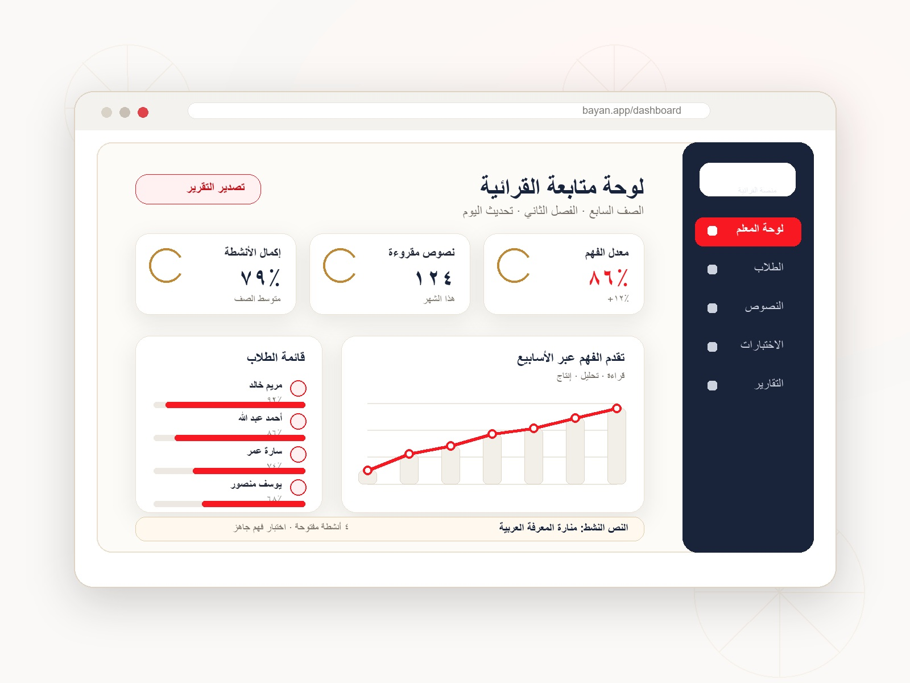

المحلي
الحضارة والعادات والمعالم والفنون والآداب المحلية.
منصة بَيَان للقرائية العربية، رحلة متدرجة عبر ستة مستويات تبني القارئ المفكر لا الناطق فحسب، بمحتوى يصل المتعلم بهويته وعالمه.

يُتقن كثير من المتعلمين فك رموز الكلمات ونطقها، لكنهم يعجزون عن فهم ما يقرؤون أو تحليله. وتتفاقم المشكلة بندرة المحتوى القرائي العربي المتدرج المبني على أسس علمية.

تجمع بَيَان بين بناء تربوي للمستويات، ومحاور معرفية متصلة بالهوية، وبيئة رقمية تجعل القراءة قابلة للتطبيق والمتابعة.
تبقى النصوص القرآنية مضبوطة كما وردت في مصدرها دون أي تخفيف للشكل في أي مستوى.
الحضارة والعادات والمعالم والفنون والآداب المحلية.

نوافذ على الحضارات الكبرى: العربية الإسلامية والفرعونية والرومانية واليونانية والصينية والهندية.

العلوم والتقنية والهندسة والرياضيات، والإنسانيات والفنون.

القرآن الكريم، الحديث النبوي، الفقه الإسلامي، والسيرة النبوية وفق ضوابط دقيقة.

المتعلم يقرأ ويتفاعل، والمعلم يكلف ويقيم ويتابع، والإدارة والوزارة ترصد الأداء على نطاق واسع.
اطلب عرضًا تعريفيًا، فيتواصل الفريق لتحديد احتياج جهتك وتجهيز تجربة مناسبة.